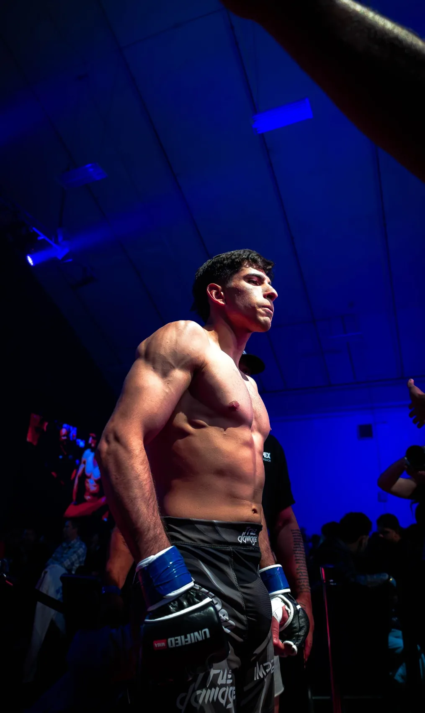
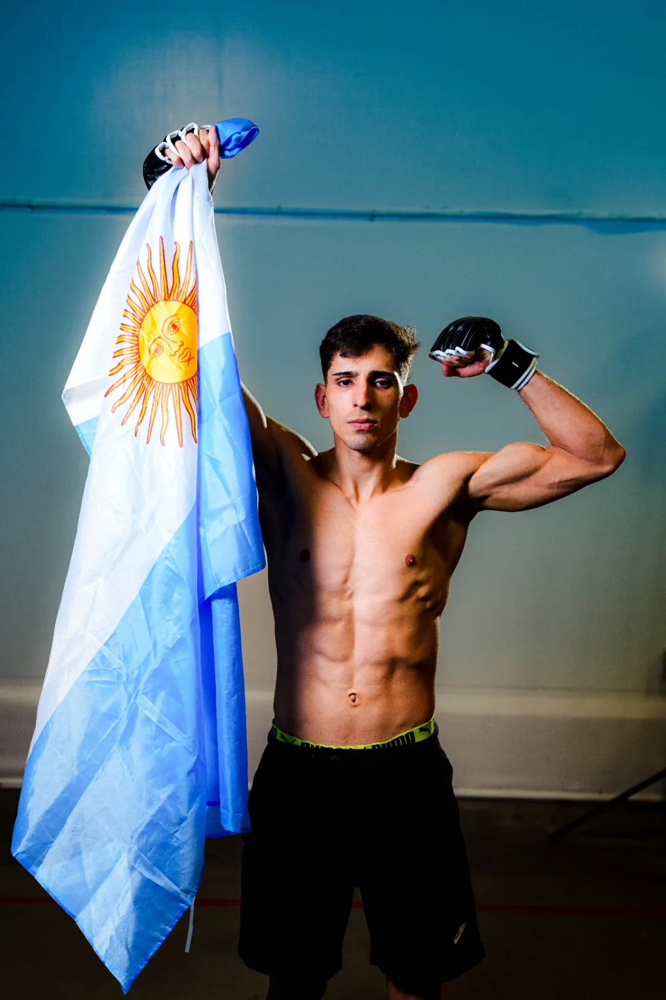
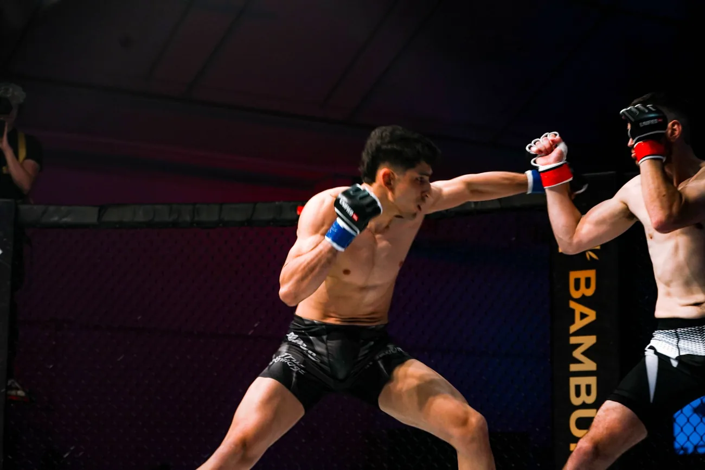

ROSARIO, ARGENTINA / MMA PROFESIONAL
AGUSTÍNBARROSO.
DISCIPLINA LOCAL. AMBICIÓN GLOBAL.
De Rosario a la escena internacional. Artes marciales mixtas, preparación y un proyecto que se construye todos los días.
Datos deportivos según dosier del atleta · noviembre 2026
01 / EL ATLETA
UNA CARRERA.MUCHO MÁS QUE UNA PELEA.
Peleador profesional de MMA. Licenciado en Actividad Física por la UGR.
Soy Agustín Barroso, deportista de Rosario, Argentina. Mi recorrido reúne diez años en el alto rendimiento, una etapa amateur de 22 peleas y una carrera profesional con experiencia en Argentina, Brasil y Canadá.
El deporte y la formación académica son parte del mismo camino: prepararme, competir y seguir creciendo. Hoy busco conectar con marcas y proyectos que quieran acompañar esa evolución.
Seguí el día a día
02 / EL CAMINO RECORRIDO
LOS RESULTADOSSON PARTE DE LA HISTORIA.
De la competencia amateur a un escenario internacional. Un recorrido que se sostiene en la preparación y la constancia.
RÉCORD PROFESIONAL
3–1–0Victorias · Derrotas · EmpatesFINALIZACIONES EN LAS VICTORIAS
2 TKO / 1 SUMISIÓNDatos deportivos según dosier del atleta · noviembre 2026
03 / DENTRO Y FUERA DE LA JAULA
EL MOMENTO.TODO LO QUE HAY DETRÁS.
04 / MARCAS QUE QUIEREN IR MÁS ALLÁ
TU MARCA.PARTE DEL EQUIPO.
Una alianza alrededor de un proyecto deportivo real. Contenido, presencia y una historia para construir juntos.
Una propuesta a medida para acompañar el proyecto.
Las acciones, ubicaciones y condiciones se acuerdan directamente. Los alcances históricos no garantizan resultados futuros.

EL PROYECTO TAMBIÉN SE CUENTA
DEL ENTRENAMIENTOA LA COMUNIDAD.
Comparto el proceso de un deportista profesional: preparación, competencia y vida fuera de la jaula. Una oportunidad para integrar marcas de forma auténtica en ese recorrido.
SEGUIDORES ENTRE INSTAGRAM Y TIKTOK
Cifra declarada en el dosier de noviembre de 2026. No es un contador en tiempo real.05 / EL PRÓXIMO PASO
HAGAMOSEQUIPO.
Patrocinios, prensa y colaboraciones. Si tu marca o proyecto conecta con este camino, conversemos.
El canal de contacto todavía no está configurado.